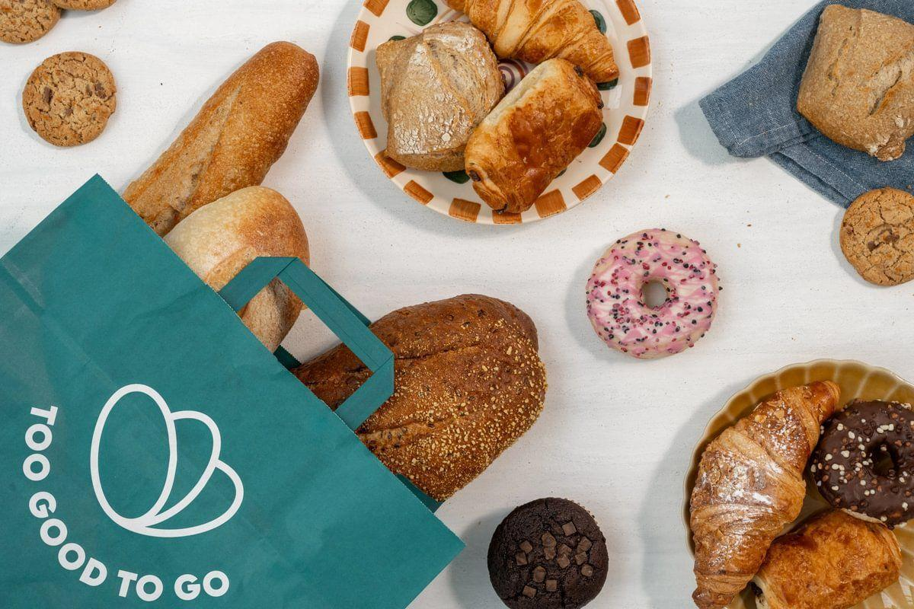
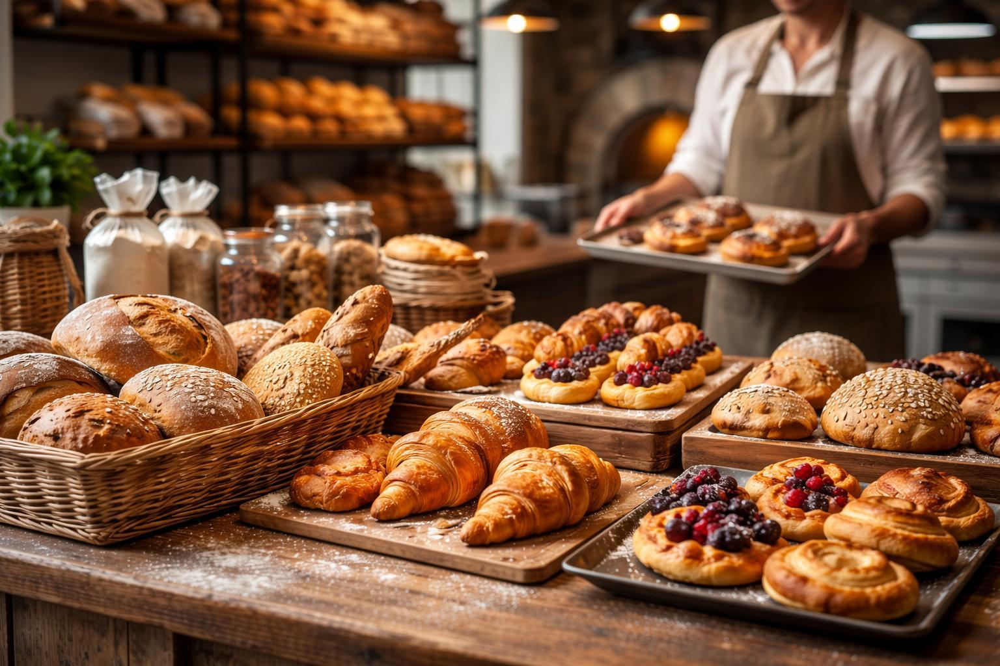
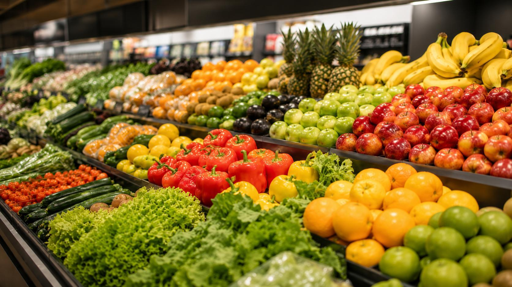
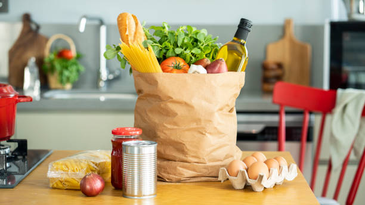

Explora opciones
Revisa los establecimientos y conoce qué tipos de alimentos podrían ofrecer.
Ver ejemplos de establecimientos →Una segunda oportunidad para los alimentos. Conoce cómo aprovechar excedentes alimentarios y contribuir a un consumo más responsable.
Proyecto académico informativo. No realiza compras ni reservas reales.

Too Good To Go es una propuesta que busca reducir el desperdicio de alimentos conectando a consumidores con establecimientos que cuentan con excedentes aptos para el consumo.
La idea es que alimentos que no llegaron a venderse durante la jornada puedan ser aprovechados en lugar de convertirse innecesariamente en residuos.
De esta manera, se promueve el consumo responsable, se aprovechan mejor los recursos y se genera conciencia sobre el desperdicio alimentario.
Conoce el recorrido que seguiría una persona para aprovechar alimentos excedentes.
Revisa los establecimientos y conoce qué tipos de alimentos podrían ofrecer.
Ver ejemplos de establecimientos →Identifica una bolsa sorpresa con excedentes alimentarios a precio reducido.
Consulta las indicaciones y el horario establecido por el negocio.
Consume los alimentos de forma responsable y ayuda a evitar desperdicios.
Estos son ejemplos de establecimientos que podrían contar con alimentos aptos para aprovechar.

Productos del día que no se vendieron, pero que se mantienen aptos para el consumo.
Una bolsa con panes del día y una porción de pastelería.
Contenido ilustrativo. Puede variar.
Alimentos que pueden aprovecharse aunque no cumplan criterios comerciales de apariencia.
Una selección de plátanos maduros, manzanas y zanahorias.
Contenido ilustrativo. Puede variar.
Excedentes que pueden ofrecerse respetando las condiciones de conservación y seguridad alimentaria.
Una porción de arroz con verduras y una ensalada del menú del día.
Contenido ilustrativo. Puede variar.Nota: los establecimientos mostrados son categorías ilustrativas; esta página no confirma negocios afiliados ni disponibilidad de productos.
El Objetivo de Desarrollo Sostenible 12 promueve modalidades de consumo y producción sostenibles. Reducir el desperdicio alimentario forma parte de ese compromiso.
PRODUCCIÓN
Y CONSUMO
RESPONSABLES
Ejemplos visuales de alimentos que pueden aprovecharse.
Reproduce este material para reflexionar sobre la producción y el consumo responsables.
“Aprovechar los alimentos que todavía son aptos para el consumo es una forma cotidiana de cuidar los recursos.”
Cada decisión de compra y consumo puede contribuir a reducir el desperdicio. Planificar, conservar adecuadamente y aprovechar los alimentos son acciones que suman.
Completa el formulario demostrativo para explorar cómo sería el contacto con el proyecto.
Este formulario es una demostración académica. No envía ni almacena información.